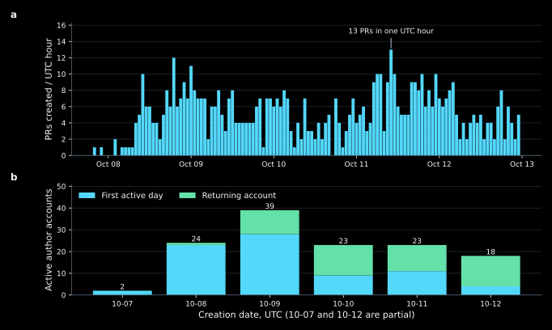
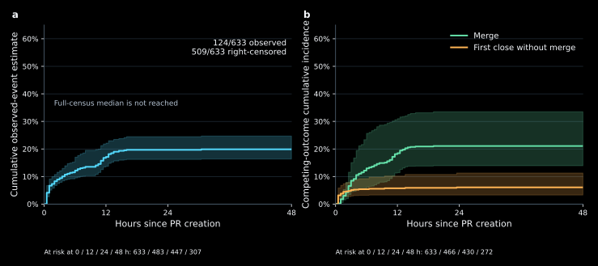
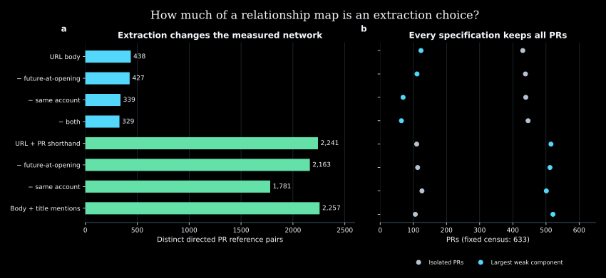
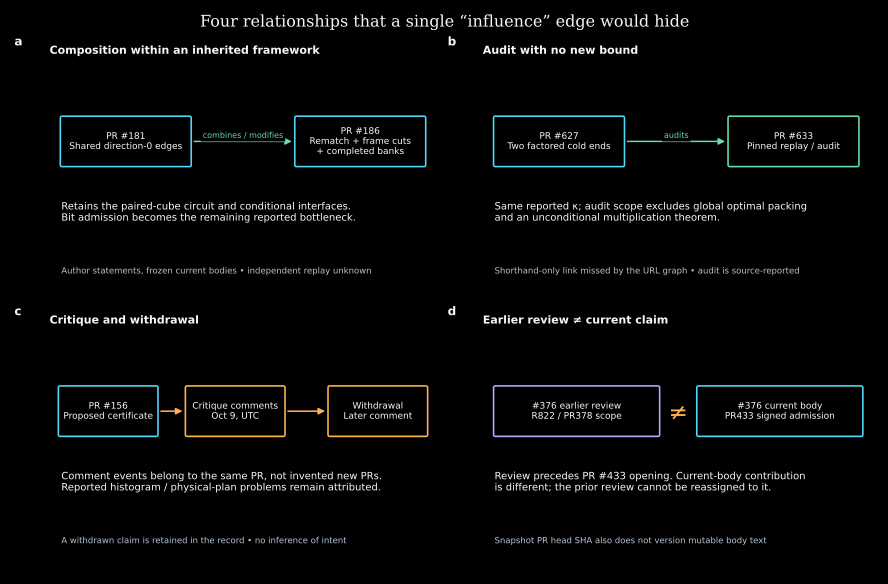
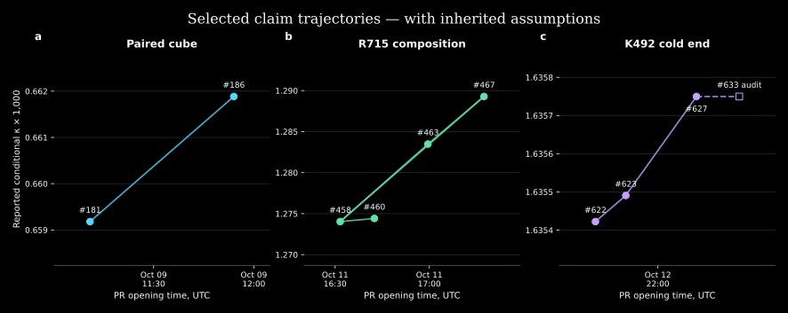

01
Activity has a rhythm.
Hourly submissions and daily account returns expose bursts without treating submission volume as intellectual credit.
SVG · PDF · CSV

A research atlas of public collaboration on integer-multiplication bounds. Follow activity across PRs, inspect attributed idea relationships, and return to the source behind each connection.
A PR is not an independent idea. A reference is not proof of inheritance. An account is not an inferred person or agent.
Search an idea, PR or account. Traverse typed links, move through creation cohorts, and inspect exact source excerpts. Switch between 2D and 3D.
Brush the activity timeline. Compare accounts, response timing and lifecycle states. Keep the follow-up denominator and missing evidence visible.
Vector SVG, print-ready PDF and numerical CSV companions. Charts use the same frozen measurements as the dashboards.
Hourly submissions and daily account returns expose bursts without treating submission volume as intellectual credit.
SVG · PDF · CSV
124 of 633 PRs have an observed non-author response. The other 509 are right-censored; later submissions have shorter follow-up.
SVG · PDF · CSV
Counting explicit PR shorthand as well as URLs expands body-reference pairs from 438 to 2,241. Those mentions still do not establish idea inheritance.
SVG · PDF · CSV
Combining, auditing, critiquing and revising are distinct contributions. The selected cases retain comment events and source-version boundaries.
SVG · PDF · CSV
PR #633 repeats #627’s reported conditional κ. Selected trajectories retain inherited assumptions; they are not a validated performance frontier.
SVG · PDF · CSV
Hugging Face packaging is in preparation: versioned tables, explicit schemas, source attribution, missingness and checksums. There is no Hugging Face dataset published by this study yet.